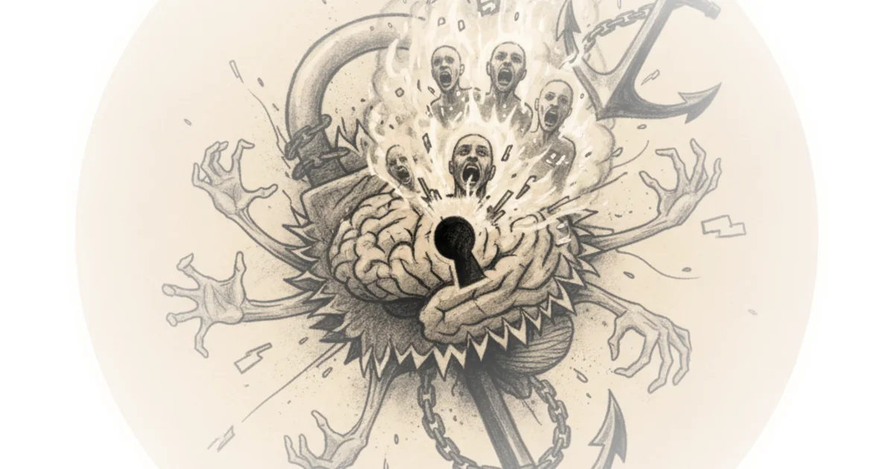

The Real Bet: Why the GPT-5 Leak Is a Distraction
Nate B Jones makes an argument that's been strangely absent from AI discourse: the most expensive bet in history isn't about the model at all. When OpenAI engineers accidentally leaked GPT-5.4's existence to a public GitHub repo twice in five days, the internet immediately focused on the model itself—prediction markets jumped, hype threads proliferated, generational leap speculation exploded across Twitter. It's the usual cycle. But Jones argues that's precisely where everyone misses the real story.

OpenAI is betting $600 billion that they'll be the first company to make enterprise-scale context genuinely usable—stored, retrievable, reasoned about, and acted upon at a trillion-token scale.
This piece digs into a deeper analysis of OpenAI's strategy following their February fundraise and the Pentagon deal. The thesis is straightforward: the company that first achieves this context capability won't just win the AI market. It becomes the new enterprise data platform. It subsumes the entire SaaS stack. It becomes the system of record for organizational knowledge in a way that makes Salesforce's lock-in look like a magazine subscription.
The Current SaaS Stack Is a Filing Cabinet
Think about where organizational knowledge currently lives—not documented, but real. Actionable knowledge is fragmented across a dozen systems: code in GitHub, architectural decisions in Confluence pages nobody updates, customer context in Salesforce, project status in Jira. Informal reasoning might live in Slack threads that scroll past or meeting transcripts no one reads, or perhaps in the heads of senior people contemplating leaving their roles.
Each system is a filing cabinet. The fragility isn't that information doesn't exist—it exists in abundance. The fragility is the synthesis layer: human brains. We have no good substitute. They're bandwidth-limited and context-switching impaired. They leave when they get a better offer.
When a senior engineer walks away, the filing cabinets remain full. What's gone is the person who knew which cabinets to open and how to connect contents together in meaningful ways. That catastrophic loss is visible firsthand to anyone in tech.
The System That Solves This Isn't a Search Engine or Chatbot
Jones describes a system that continuously ingests from every filing cabinet in the business, maintains a coherent model of organizational knowledge, and reasons about it at a depth no individual can match. That's what OpenAI's stateful runtime environment is designed to become.
When this works, filing cabinets become data sources—not systems of record. Jira is no longer where project knowledge lives; it's where an agent ingests signal integrated with code changes, customer feedback, and strategic priorities into coherent understanding. SaaS applications survive as workflow tools, but intelligence, synthesis, and value move into a context platform.
Salesforce is worth a quarter-trillion dollars for owning customer data. ServiceNow is worth $200 billion for owning IT workflow data. The company that owns the synthesis layer across all enterprise data is worth much more than both combined.
Most enterprises hate moving data. But keeping data in old systems of record isn't where margin lives. If you're disintermediated on synthesis and agentic workflows, there's no future as a SaaS business.
The Context Layer Alone Is Worthless
A trillion tokens of organizational memory sitting in a runtime is a landfill—not an asset. An engineer asking an agent to refactor a payment module and receiving no coherent response because the agent can't process that many tokens completely is useless.
The relevant context must be retrievable at very high fidelity. Even with enormous overall structure, you need to reliably find 2,000 tokens in a 10 trillion token storage. That's a reasoning-about-what-matters problem qualitatively harder than anything current AI systems do well.
Jones doesn't necessarily expect OpenAI to achieve this with the next GPT-5 drop. In fact, everything indicates they'll need multiple drops over the next year or so. This is about looking down the road for builders—keeping high beams on and seeing where space is going. And it's going to reshape work for all of us.
The Four Compound Bets
OpenAI's actual bet is compound, made of four capabilities that must work together. Failure of any one collapses their entire multi-hundred-billion-dollar bet:
First Bet: Intelligence and Context Is Multiplicative. Give a mediocre model a million tokens of organizational history and it drowns—pattern matches on surface level similarity, finds discussions that sound related but were about different services in different contexts, synthesizes confidently from that. Long context with weak reasoning is actively harmful. Enterprises should run away from it.
A strong reasoning model changes this game. It distinguishes between a relevant decision and a superficially similar one that doesn't apply. It weighs conflicting evidence across sessions. It recognizes when context is insufficient. The relationship becomes multiplicative as reasoning gains power. Each increment expands the scope of context the model can productively use and generates nonlinear returns.
This is why every GPT-5.x point release is loadbearing for the context bet. Even if benchmarks look incremental, they're building the intelligence floor that determines how much organizational context the synthesis layer can actually use. If reasoning starts to plateau, the context layer degrades from institutional memory—incredibly valuable—to a very expensive rag pipeline that hallucinates organizational knowledge, actively harmful and unwanted.
Second Bet: Memory That Doesn't Rot. Today's AI memory is a coworker who remembers your coffee order but forgets many substantive details by next week. What OpenAI's stateful runtime environment needs is institutional memory at depth that has never existed in software.
Consider what organizational knowledge actually looks like inside a large engineering organization: the architect who built the payment service in 2019 knows but never wrote down that retry logic has a specific interaction with rate limiter causing cascading failures under particular load patterns. The decision eighteen months ago to use eventually consistent reads with rationale that strong consistency would add 40 milliseconds of unacceptable latency is documented nowhere except an archive Slack thread and a design review three people attended, two since departed.
This knowledge evaporates. Every departure, every reorg, every on-call rotation contributes to continual organizational forgetting and rediscovering. No engineering org avoids this. Memory that preserves context without updating it is worse than no memory—it's institutional hallucination: the AI equivalent of an engineer who's been at the company a decade and confidently explains how things work based on what they discovered from last year.
OpenAI bets the memory system will be current, maintaining, resolving contradictions, deprecating stale knowledge, tracking what's current versus superseded versus historically relevant. Whether models can do this is an open research question, not an engineering problem with known solution. Expect progress in 2026.
Third Bet: The Retrieval Problem Nobody's Talking About. This is the crux. When your agent has trillions of tokens of organizational history, the current retrieval paradigm—RAG—absolutely cannot solve the problem.
RAG works for factual lookup; it breaks for enterprise-scale organizational context. It can't handle relational queries across time. Finding the chain of decisions that led to a current vulnerability requires understanding temporal sequence and causation across multiple events over months—it doesn't work that way. Rag also can't distinguish current context from context about systems that don't exist: same keywords, same entities, same vocabulary means rag sees it as the same thing.
This degrades as corpus grows—more false positives, more near-miss retrievals, more opportunities for confident synthesis from irrelevant context. A solution probably requires hybrid architecture: structured indexing tracking entities and causal chains over time; hierarchical memory at multiple granularity levels; temporal state tracking; possibly state space compression for long-horizon context.
Retrieval quality at enterprise scale is invisible in current benchmarks. No one runs evaluations on finding 2,000 relevant tokens in 10 trillion when relevance is defined by causal chains across eight months. The company that solves this first has a lead competitors can't assess from outside. Retrieval is the bottleneck determining whether other capabilities produce an institutional memory system or institutional hallucination system.
OpenAI is openly working on the context layer and tackling retrieval. Expect progress here.
Fourth Bet: Execution Accuracy. Jones calls it execution at the speed of trust. When an agent runs autonomously across hundreds of tasks for weeks, even a tiny 5% per-task failure rate compounds into systemic risk extremely quickly.
The target for sustaining long-running agentic workflows at this context level—delivering value—requires closer to 99.5% or higher sustained across diverse tasks including situations where organizational context is ambiguous, contradictory, or incomplete.
Counterpoints
Critics might note that OpenAI faces significant technical hurdles with no proven solution yet—the memory and retrieval problems may prove unsolvable within any reasonable timeline. Another counterargument: enterprise-scale context requires cooperation from dozens of existing SaaS platforms, and those companies have strong incentives to block the synthesis layer Jones describes rather than become data sources feeding someone else's intelligence platform.
Bottom Line
Jones's strongest argument is identifying what everyone else is missing: the model leak is a distraction hiding OpenAI's compound bet on four capabilities that must work together. His vulnerability is timing—solving retrieval at trillion-token scale with 99.5% accuracy may require multiple years and multiple drops, not months. Watch for progress on institutional memory and retrieval quality in 2026; those two bets determine whether the synthesis layer becomes invaluable knowledge or harmful hallucination.